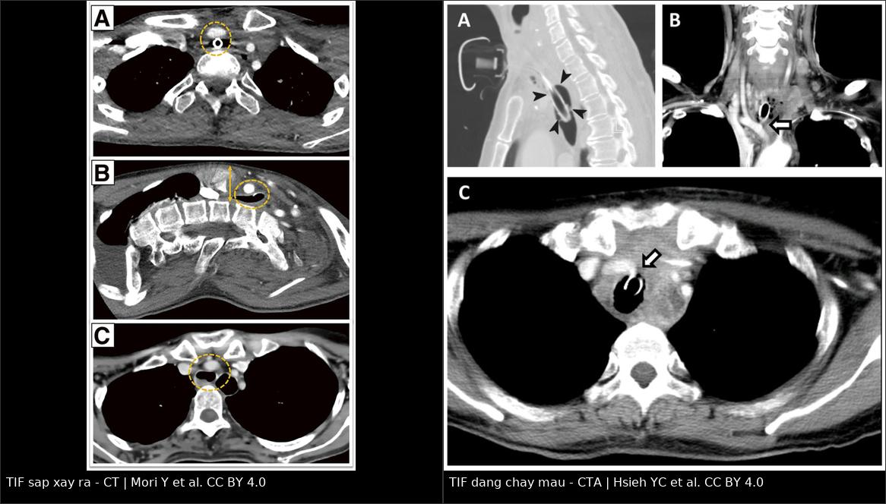
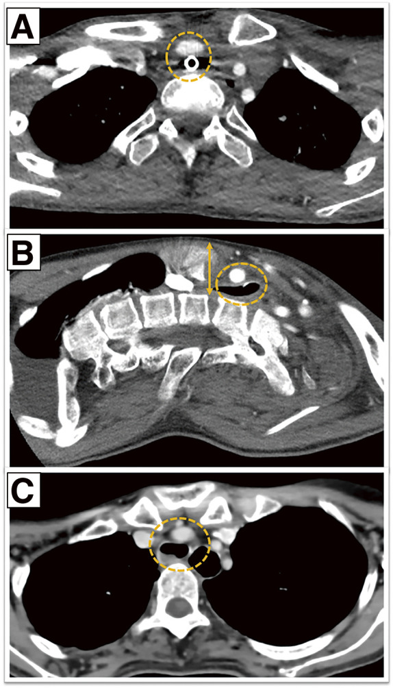
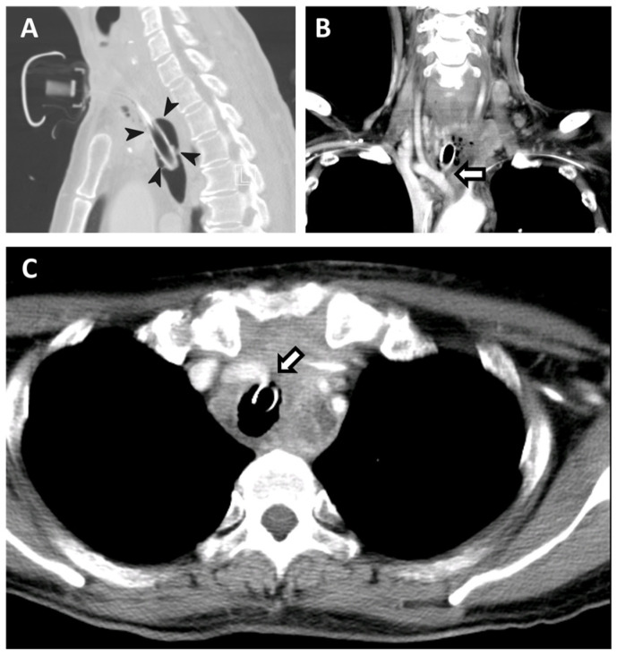
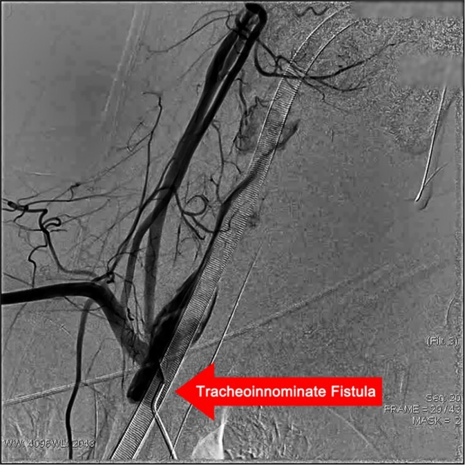

6159 — Rò khí quản – động mạch không tên (tracheo-innominate fistula): chảy máu "báo trước", đo khoảng trước xương ức và chèn ép bằng cuff
Tags: pattern:chay-mau-duong-tho pattern:ro-dong-mach pattern:gia-phinh pattern:hep-khoang-trung-that vung:khi-quan vung:trung-that vung:mach-co protocol:CTA protocol:noi-soi-phe-quan protocol:DSA
Mức chắc chắn (certainty): tổng hợp y văn (literature synthesis) — 1 loạt 3 ca "TIF sắp xảy ra" có CT (PMC13186634), 1 ca nguyên văn CTA lúc chảy máu có cuff bơm căng (PMC10814070), 1 ca nguyên văn có DSA + stent-graft (PMC13091394), cùng 2 bài tổng quan về chảy máu sau mở khí quản (PMC13449771; PMC13740721). Chỗ suy luận được ghi [suy luận].
Câu chốt: TIF là biến chứng hiếm (< 1%) nhưng tử vong > 50% dù đã can thiệp và 100% nếu không can thiệp (PMC13449771). Cơ hội duy nhất để cứu bệnh nhân là nhận ra "chảy máu báo trước" (sentinel bleed) — nhưng nó chỉ có ở 30% ca; 70% còn lại đến viện bằng chảy máu ồ ạt (PMC13449771). Hai việc không được làm: rút/thay ống mù (mất nút chèn ép) và đẩy bệnh nhân đi CT khi đang chảy máu không kiểm soát. Hai con số định vị nguy cơ: khoảng trước xương ức < 20 mm trên CT sagittal (PMC13186634) và vòng sụn khí quản 6–9 — nơi động mạch không tên bình thường bắt ngang qua (PMC13449771).
1. Tổng quan bệnh học – cơ chế hình ảnh
- Giải phẫu quyết định mọi thứ: động mạch không tên (brachiocephalic trunk) tách từ quai động mạch chủ, đi lên–sang phải trước khí quản, bắt ngang khí quản ở khoảng vòng sụn 6–9; giữa hai cấu trúc chỉ là mô liên kết lỏng + mạc trước khí quản dày vài mm. Khi động mạch "đi cao" (high-riding) — chạy dọc, lên cao trong eo ngực — hoặc khi có quai bò (bovine arch) (gặp ~35% dân số) thì khoảng cách này ngắn hơn hẳn (PMC13449771).
- TẠI SAO rò hình thành: cuff bơm quá căng (over-inflation) → áp lực lên niêm mạc khí quản vượt áp lực tưới máu mao mạch → thiếu máu niêm mạc → viêm sụn → hoại tử thành trước khí quản → ăn mòn thành sau động mạch → rò. Vì tổn thương là hoại tử áp lực từ từ, rò xuất hiện sau nhiều tuần đến vài tháng (ca dưới đây: 2,5 tháng), không phải ngay sau mở khí quản (PMC13449771).
- Yếu tố nguy cơ (đã liệt kê trong y văn): đặt ống/khí quản quản > 3 tuần, mở khí quản quá thấp (ống sát động mạch), béo/cổ ngắn, dị dạng cột sống, xạ trị vùng cổ–trung thất, suy dinh dưỡng, suy giảm miễn dịch, nhiễm trùng lỗ mở/trung thất, tụt huyết áp kéo dài, corticoid, và bovine arch/động mạch đi cao (PMC13449771; PMC13740721).
- TẠI SAO CTA thấy được: khi có rò, thuốc cản quang thoát từ lòng động mạch vào lòng khí quản ở thì động mạch (arterial phase) → thấy dòng thuốc / ổ đọng thuốc trong khí quản, giả phình hoặc mất mặt phẳng mỡ giữa ống và động mạch. Nếu cuff còn bơm căng, chính bóng cuff đè lên chỗ rò — trên CTA thấy thành khí quản phồng ra, cản thuốc đúng vị trí rò (PMC10814070).
- TẠI SAO CT có thể âm tính giả: chảy máu ngắt quãng, đang được cuff chèn ép, chụp không thì động mạch, hoặc giả ảnh streak từ ống kim loại. Vì vậy CTA âm tính không loại trừ TIF khi bệnh cảnh điển hình.
- Số liệu định lượng cốt lõi:
- Tần suất: < 0,1%–1% tổng số ca mở khí quản; chảy máu chung sau mở khí quản 0,6–5,0% (phần lớn là rỉ máu nhẹ) (PMC13449771; PMC13740721).
- Tử vong: > 50% dù can thiệp; 100% nếu không can thiệp (PMC13449771; PMC13186634).
- Chảy máu báo trước: chỉ 30% ca; 70% không có dấu hiệu nào trước cơn ồ ạt (PMC13449771).
- Bối cảnh thuận lợi: 90% bệnh nhân mở khí quản không biến chứng trong 90 ngày và 88% cai ống thành công — nghĩa là TIF là biến cố hiếm nhưng không thể bỏ qua (PMC13449771).
- Bovine arch: ~35%; TIF ở nhóm này hay bị báo cáo thiếu vì động mạch nằm sát khí quản hơn (PMC13449771).
2. Mẫu hình + chẩn đoán phân biệt theo vị trí (gamut)
Mẫu hình chốt: bệnh nhân đang có ống mở khí quản, chảy máu đỏ tươi qua lỗ mở, có thể chỉ một lần rồi tự cầm ("sentinel bleed"), sau đó vài giờ đến vài ngày chảy máu ồ ạt; soi thấy mô hạt đập theo mạch ở thành trước khí quản.
- Theo thời điểm so với lúc mở khí quản:
- Sớm (giờ–ngày đầu): tổn thương nhánh động mạch giáp dưới (inferior thyroid artery), rỉ máu lỗ mở, rối loạn đông máu — thường không ồ ạt và không có mô hạt đập.
- Muộn (tuần–tháng): TIF, u hạt/loét do đầu ống, hẹp khí quản — TIF là nguyên nhân chết người của nhóm này.
- Theo hình ảnh:
- CT/CTA: ống sát/đè thành trước khí quản; mất mặt phẳng mỡ giữa khí quản và động mạch; giả phình động mạch không tên; thuốc thoát vào khí quản; khoảng trước xương ức < 20 mm.
- Nội soi phế quản: mô hạt đập, cục máu đông, lỗ rò nhỏ ở thành trước — vừa chẩn đoán vừa có thể chèn ép tạm.
- DSA: xác định vị trí và kích thước lỗ rò (ca dưới đây: 3 mm) và đặt stent-graft ngay (PMC13091394).
- Gamut "ống mở khí quản + máu": TIF – nhánh giáp dưới – u hạt chảy máu – loét do đầu ống – rối loạn đông máu/DIC – u khí quản – rò khí quản–thực quản (thường thức ăn/dịch, không phải máu đỏ tươi).
3. Bảng so sánh phân biệt (ma trận đối chiếu)
| Thực thể (entity) | Hình ảnh điển hình (CT/CTA/nội soi) | Chốt vào (rule-in) | Chốt loại (rule-out) | Gợi ý xác nhận |
|---|---|---|---|---|
| Rò khí quản – động mạch không tên (TIF) | Ống sát thành trước khí quản; mất mặt phẳng mỡ; giả phình; thuốc thoát vào khí quản; soi: mô hạt đập | Chảy máu đỏ tươi qua lỗ mở, tự cầm rồi tái phát + mô hạt đập ở thành trước | Không có mô hạt đập, không có máu đỏ tươi, CT có mặt phẳng mỡ rõ → nghĩ nguyên nhân khác | CTA thì động mạch + nội soi; DSA khi cần can thiệp |
| Tổn thương nhánh động mạch giáp dưới | Máu ở quanh lỗ mở, không có khối trong khí quản; CTA không thấy thuốc vào lòng khí quản | Chảy máu ngay–vài ngày sau mổ, khu trú ở bờ lỗ mở | Mô hạt đập + chảy máu tái phát muộn → nghĩ TIF | Nội soi + CTA; thường xử trí tại chỗ |
| U hạt / loét do đầu ống | Nốt mô hạt không đập, đầu ống tì vào thành sau/trước; không có giả phình | Chảy máu nhỏ, dai dẳng, không ồ ạt; thấy điểm tì của đầu ống | Động mạch đập ngay dưới tổn thương → coi như TIF cho tới khi loại trừ | Nội soi; theo dõi sát |
| Rò khí quản – thực quản | Khí trong thực quản, dịch/thức ăn trong khí quản; không có máu đỏ tươi | Nuốt sặc, dịch tiêu hóa trong khí quản | Máu đỏ tươi + mô hạt đập → nghĩ mạch máu | Nội soi + cản quang nuốt |
| Giả phình động mạch không tên chưa rò | Khối cản thuốc cạnh khí quản, không có thuốc trong lòng khí quản | Khối đập cạnh khí quản trên CTA, chưa có máu qua lỗ mở | Đã có máu đỏ tươi qua lỗ mở → đã rò | CTA + DSA; can thiệp dự phòng khi có triệu chứng |

Trái: CT trước mổ — ống mở khí quản tiếp giáp trực tiếp động mạch không tên (vòng đứt nét), dựng sagittal cho khoảng trước xương ức 18 mm. Phải: CTA khi đang chảy máu — cuff bơm căng đè lên chỗ rò (mũi tên đầu). Nguồn: Mori Y et al., CC BY 4.0 (PMC13186634); Hsieh YC et al., CC BY 4.0 (PMC10814070). Ảnh ghép letterbox.Ba dấu hiệu định vị trên CT sagittal (thay cho "nhìn thấy là biết")
- Khoảng trước xương ức (retrosternal distance): đo từ mặt sau xương ức tới mặt trước thân đốt sống cổ/ngực trên lát giữa. < 20 mm = trung thất trước trên chật, ống dễ tì vào động mạch (ca báo cáo: 18 mm) (PMC13186634).
- Khoảng cách ống–động mạch: đo từ bờ ngoài ống tới bờ động mạch trên lát ngang tại mức bắt ngang; mất lớp mỡ giữa hai cấu trúc là dấu hiệu đáng lo nhất.
- Mức bắt ngang: ghi theo vòng sụn khí quản (bình thường 6–9); càng lên cao càng nguy hiểm (PMC13449771).
4. Protocol chụp + phân tầng nguy cơ
- CTA cổ–ngực trên: lát ≤ 1 mm, thì động mạch (bolus tracking ở quai ĐMC), dựng sagittal + coronal + MPR; không cần chụp lại nhiều lần — một lần đủ để trả lời ba câu: ống có chạm động mạch không, có giả phình không, có thuốc trong khí quản không.
- Nội soi phế quản ống mềm (nếu bệnh nhân ổn định): tìm mô hạt đập, cục máu đông, lỗ rò; có thể bơm cuff chèn tạm hoặc đặt ống chèn có bóng.
- DSA: chỉ định đồng thời chẩn đoán + điều trị (stent-graft phủ) khi chảy máu kiểm soát được bằng cuff; ca nguyên văn: rò 3 mm, đặt stent-graft, rút ống ngày 5, stent thông 1 tháng (bệnh nhân còn di chứng thần kinh nặng do thiếu máu não) (PMC13091394).
- Không có hệ phân độ RADS cho TIF. Phân tầng thực hành theo 3 mức:
flowchart TD
A[Chảy máu qua lỗ mở khí quản] --> B{Đang chảy ồ ạt?}
B -->|Có| C[Bơm căng cuff + ép trực tiếp qua lỗ mở<br/>KHÔNG rút/thay ống mù<br/>hồi sức, máu, sửa đông máu]
C --> D{Kiểm soát được?}
D -->|Không| E[Mổ mở ngay: bộc lộ ĐM không tên<br/>buộc/cắt + mô đệm]
D -->|Có| F[CTA thì động mạch + nội soi]
B -->|Không, chỉ chảy máu báo trước| F
F --> G{Có rò/giả phình?}
G -->|Có| H[Stent-graft phủ qua da<br/>hoặc mổ buộc ĐM + mô đệm]
G -->|Không nhưng lâm sàng điển hình| I[Theo dõi ICU sát, soi lại<br/>chuẩn bị can thiệp tức thì]
G -->|Không và lâm sàng khác| J[Tìm nguyên nhân khác: nhánh giáp dưới, u hạt, đông máu]
- Dự phòng (quan trọng hơn cấp cứu): giữ áp lực cuff 20–30 cmH₂O (không vượt 30, kiểm bằng manometer mỗi ca trực); đặt ống không quá thấp; đầu ống cách carina ≥ 2 cm; với nguy cơ cao (động mạch đi cao, bovine arch, khoảng trước xương ức < 20 mm, xạ trị, suy dinh dưỡng) → cân nhắc mô đệm (muscle flap) giữa khí quản và động mạch khi mở khí quản (PMC13449771).
5. Biến thể bình thường và cạm bẫy
- Biến thể bình thường: động mạch không tên bắt ngang cao ở người trẻ/cổ dài; quai bò type 1 (thân chung ĐM cảnh trái + ĐM không tên) gặp ~35%, không phải bệnh — nhưng làm thay đổi khoảng cách ống–động mạch (PMC13449771). Bóng cuff bình thường khi bơm đúng có thể chạm nhẹ thành khí quản — chỉ gọi "tiếp giáp nguy hiểm" khi mất lớp mỡ và đè lệch thành.
- Cạm bẫy 1 — coi "chảy máu báo trước" là rỉ máu lỗ mở: đây là cửa sổ duy nhất để cứu; mọi chảy máu đỏ tươi, một lần, tự cầm ở bệnh nhân có ống mở khí quản phải soi + CTA trong vài giờ (PMC13740721; PMC13449771).
- Cạm bẫy 2 — rút/thay ống mù để "xem cho rõ": mất nút chèn ép của cuff và có thể mất đường thở trong vài giây; nếu buộc phải thay, phải có ống khác đã chuẩn bị + nội soi + phẫu thuật mạch đứng chờ (PMC10814070).
- Cạm bẫy 3 — chụp CT không cản quang hoặc thì tĩnh mạch: không thấy thuốc thoát; luôn CTA thì động mạch, và nếu bệnh nhân không ổn định thì không đi CT — ưu tiên phòng mổ/phòng can thiệp.
- Cạm bẫy 4 — giả ảnh streak từ ống: ống có dây kim loại tạo vệt sáng–tối dọc trục, có thể che lỗ rò hoặc giả tạo khối; đọc trên MPR sagittal và đối chiếu nội soi.
- Cạm bẫy 5 — chỉ đo trên lát ngang: khoảng cách ống–động mạch thay đổi theo hô hấp và tư thế đầu; đo trên sagittal giữa và ghi mức vòng sụn để so sánh giữa các lần chụp.
- Cạm bẫy 6 — bỏ qua bovine arch/động mạch đi cao: báo cáo ghi nhận nhóm này bị báo cáo thiếu; nếu thấy động mạch đi lên dọc trước khí quản, hạ ngưỡng cảnh giác và theo dõi nội soi định kỳ ở bệnh nhân mở khí quản lâu dài (PMC13449771).
6. Tự lượng giá — Blind Quiz ngay trên trang tĩnh
Ca 1 — "Ống mở khí quản sát động mạch"

- Gợi ý lâm sàng: bệnh nhân mở khí quản lâu ngày, chuẩn bị mổ vì nguy cơ chảy máu; chưa có cơn chảy máu nào.
- Câu hỏi: (1) Bất thường giải phẫu chính là gì? (2) Đo gì trên mặt cắt B và ngưỡng bao nhiêu? (3) Ba việc cần làm trước khi xảy ra chảy máu?
Bấm để hiện đáp án (findings + chẩn đoán)
- Dấu hiệu: (A,C) ống mở khí quản tiếp giáp trực tiếp động mạch không tên (vòng đứt nét), mất lớp mỡ giữa hai cấu trúc; (B) dựng sagittal cho khoảng trước xương ức 18 mm — dưới ngưỡng 20 mm.
- Chẩn đoán: TIF sắp xảy ra (impending TIF) — động mạch nằm sát khí quản vì trung thất trước trên chật; chưa rò nên chưa có máu.
- Việc cần làm: kiểm soát áp lực cuff (20–30 cmH₂O), theo dõi nội soi mô hạt đập, và cân nhắc mô đệm/mổ dự phòng ở ca nguy cơ rất cao.
- Nguồn ảnh: Mori Y et al., Ann Vasc Dis 2026, CC BY 4.0 (PMC13186634).
Ca 2 — "Cuff bơm căng đang cầm máu"

- Gợi ý lâm sàng: nữ 58 tuổi, chảy máu ồ ạt qua lỗ mở khí quản, đã bơm căng cuff để cầm máu tạm.
- Câu hỏi: (1) Thuốc cản quang đi đâu? (2) Vì sao bóng cuff phồng to lại là dấu hiệu chẩn đoán, không phải lỗi kỹ thuật? (3) Bước tiếp theo?
Bấm để hiện đáp án (findings + chẩn đoán)
- Dấu hiệu: (A) sagittal — bóng cuff phồng to, đè lệch thành trước khí quản (mũi tên đầu); (B,C) ngang — thuốc thoát từ động mạch không tên vào khí quản đúng chỗ cuff đè.
- Chẩn đoán: TIF — cuff vừa là nguồn gốc cơ chế (bơm quá căng gây hoại tử áp lực), vừa là biện pháp cầm máu tạm; vị trí bóng phồng chỉ đúng chỗ rò.
- Bước tiếp theo: giữ cuff, không rút ống, hội chẩn mạch máu → DSA + stent-graft hoặc mổ buộc động mạch + mô đệm.
- Nguồn ảnh: Hsieh YC et al., Diagnostics (Basel) 2024, CC BY 4.0 (PMC10814070).
Ca 3 — "Xác định lỗ rò và bịt bằng stent"

- Gợi ý lâm sàng: nam trẻ, chảy máu ồ ạt qua lỗ mở khí quản, hồi sức thành công, được chụp mạch.
- Câu hỏi: (1) Dấu hiệu trên phim? (2) Kích thước tổn thương? (3) Hai lựa chọn điều trị triệt để và khác biệt chính?
Bấm để hiện đáp án (findings + chẩn đoán)
- Dấu hiệu: thuốc cản quang thoát từ động mạch không tên qua một đường rò vào khí quản (dấu sao) — đường rò 3 mm.
- Chẩn đoán: TIF đã xác định bằng DSA; đặt stent-graft cầm máu, bệnh nhân rút ống ngày 5, stent thông ở 1 tháng (còn di chứng thần kinh do thiếu máu não).
- Hai lựa chọn: stent-graft phủ qua da (nhanh, ít xâm lấn, cầu nối ở bệnh nhân không ổn định/cổ đã mổ) vs mổ buộc/cắt động mạch + mô đệm (triệt để, kiểm soát ổ nhiễm, nhưng nặng); nhiều ca cần cả hai theo thì.
- Nguồn ảnh: Peng X et al., J Surg Case Rep 2026, CC BY-NC (PMC13091394).
Bài liên quan chéo
- 6100 — Chăm sóc và cai ống mở khí quản ở trẻ
- 6143 — Cách ly thành khí quản, botulinum và nước bọt ở trẻ
- 6144 — Nội soi thanh khí quản định kỳ ở trẻ có ống mở khí quản
- 061 — Tràn khí trung thất
- 1778 — Chấn thương phổi do sóng nổ ở trẻ
Không dùng để chẩn đoán độc lập khi chưa có người hướng dẫn.